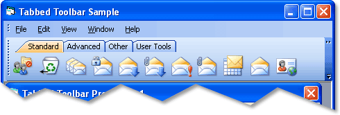

Overview
| Xtreme Command Bars ActiveX Control v15.3 |
Represents a Tabbed ToolBar.
For a list of all members defined in this module, see TabToolBar members.

|
A Tabbed ToolBar contains all the functionality of Standard ToolBars (CommandBar) however Tabbed toolbars eliminate the need for numerous toolbars to be crowded at the top of your application. Many toolbars, called categories can be "tabbed" together. Switching between toolbar categories is similar to a TabControl, you can now access all of your toolbar categories simply by clicking on its tab. Tabbed toolbars also increases the usable viewing area by organizing the toolbars into a single tab group. You can still use normal toolbars outside of the TabbedToolbar if needed. The TabbedToolbar will dock just like a normal toolbar.

Tabbed toolbars are added using the AddTabToolBar method.
The Tabbed Toolbar consists of one or more categories, each category has it's own tab. Tabs are used to display the corresponding category. Categories can be thought of as separate toolbars. Buttons and other controls can then be added to each category. The InsertCategory method is used to insert a category into a tabbed toolbar. The InsertCategory method returns a TabControlItem, which is the tab used to access the category. In the picture above, "Advanced", "Standard", "Other", and "User Tools" are all categories that were added to a Tabbed ToolBar.
The UpdateTabs method must be called after adding buttons\controls to a category in the tabbed toolbar so the new control can be added to the appropriate Category. When adding buttons\controls, the Category property for the new button\control must be set to the name of a category in the tabbed toolbar. After UpdateTabs is called the buttons will be displayed in the appropriate category.
The appearance, color, and theme of the tabs used in the Tabbed Toolbar can be customized using the TabPaintManager property. Depending on which visual changes that are made, the RedrawBar and RecalcLayout method might be needed to update the tabbed toolbar.
The AllowReorder property is used to specify that the tabs in the tabbed toolbar can be reordered.
The MinimumWidth property specifies the minimum width the Tabbed Toolbar can be regardless of how few items might be in a category.
Methods and Properties unique to the Tabbed Toolbar are:
InsertCategory, UpdateTabs, and RemoveCategory methods
Category, MinimumWidth, TabPaintManager, AllowReorder, and CategoryCount properties.
[Tabbed ToolBar Sample (Visual Basic)] This sample illustrates how to add a Tabbed Toolbar and how to add categories with button to the Tabbed ToolBar.
Dim Control As CommandBarControl |
TabToolBar Members | TabControlItem Object | Category Property | InsertCategory Method | RedrawBar Method | UpdateTabs Method | AllowReorder Property | CategoryCount Property | XTPTabLayoutStyle Enumeration | TabPaintManager Property | RecalcLayout Method | MinimumWidth Property | RemoveCategory Method | CategoryCount Property | AddTabToolBar Method